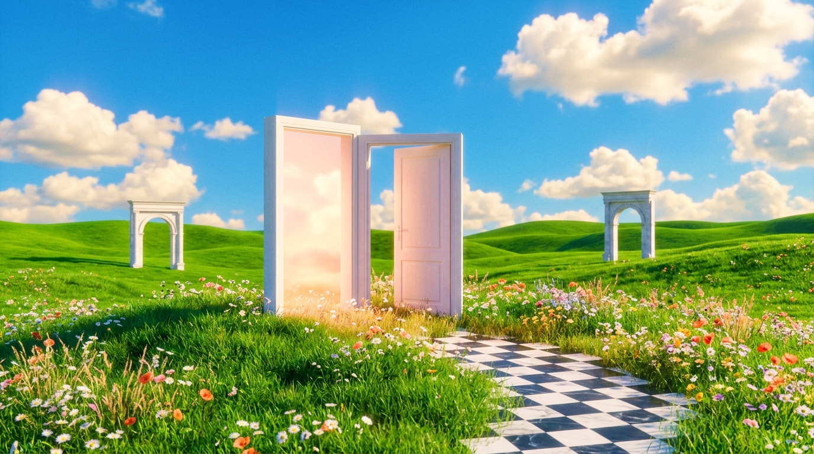
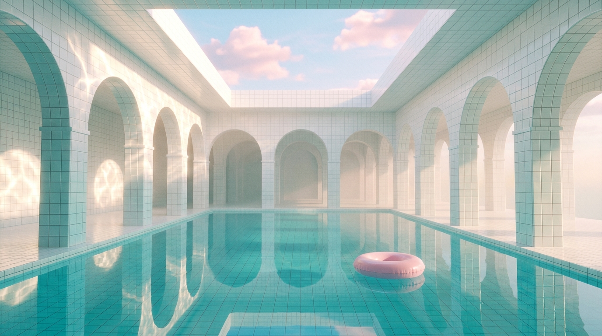
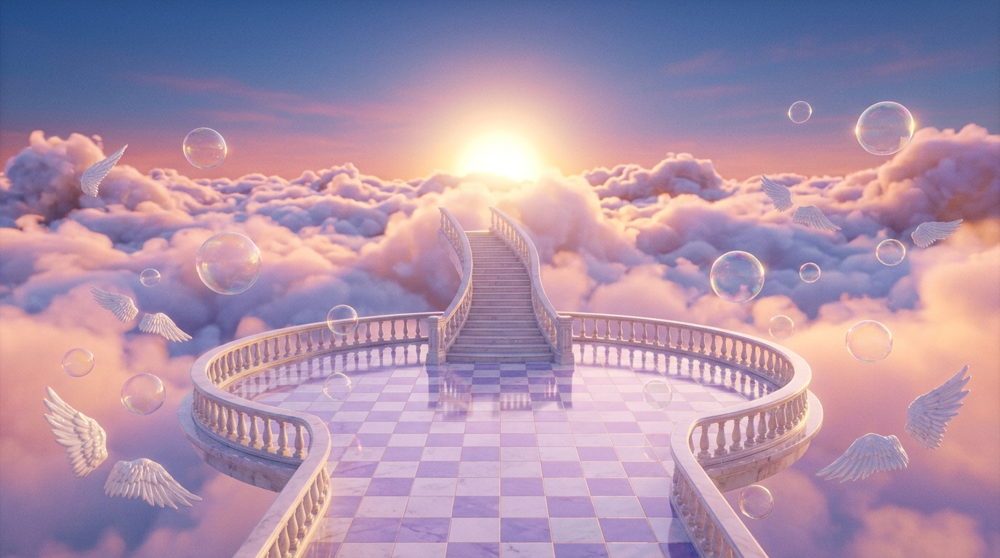

liminal_viewer.exe — [01_endless_sunday.bmp]



STRATUM 01 // MEADOW THRESHOLD
SP · 00:42:19
you don't have to go inside yet. the grass still remembers your name.
recovered trace:
standing barefoot on cool marble squares while a distant lawnmower hums across an empty suburb.
PORTAL: (41.0%, 48.0%)